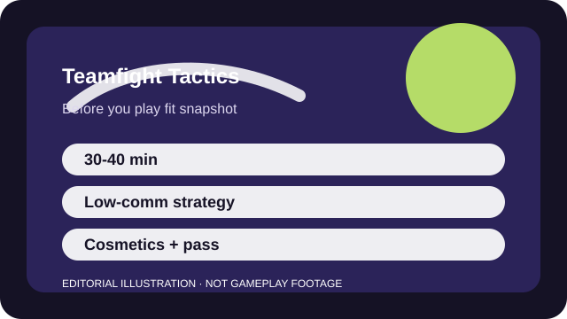

BEFORE YOU PLAY
What this page is and is not
This is a sourced editorial fit profile. It is designed to help with a yes-or-no play decision, and it does not claim a scored hands-on review.
The game becomes much easier to like once you stop trying to memorize everything on day one and instead learn one flexible opening and one late-game plan. If that kind of strategic patience sounds good, TFT is rewarding.
The first-session loop to judge is simple: Manage economy, scout the lobby, and adapt your board as item drops and contested units change the plan.
The long-term hook is learning each set's trait web and transition patterns rather than building account power.

FIT SNAPSHOT
Teamfight Tactics at a glance
| Genre | Auto battler |
|---|---|
| Platforms | PC, Mobile |
| Business model | Free-to-play strategy game with cosmetic monetization and seasonal passes. |
| Typical session | 30-40 minute matches that reward planning and adaptation more than speed. |
| Play style | economy-and-positioning strategy |
| Learning barrier | TFT is approachable once the shop makes sense, but each new set brings a fresh web of traits, units, and item priorities. |
| Social shape | The game works solo or socially, yet live voice coordination matters less than in shooters or MOBAs. |
WHO IT FITS
Best fit, likely friction, and the social reality
strategy players who want planning, economy decisions, and flexible adaptation instead of twitch aim
players who need short matches or dislike relearning sets
The game works solo or socially, yet live voice coordination matters less than in shooters or MOBAs.
The long-term hook is learning each set's trait web and transition patterns rather than building account power.
FIRST SESSION PLAN
How to test the fit in one evening
- Learn interest breakpoints and leveling basics before chasing advanced compositions.
- Force one simple comp for a few games so the economy rhythm becomes familiar.
- Scout the lobby every player-damage phase even if you only understand half of what you see.
- Judge the game after one full match where adaptation mattered, not after a lucky opening shop.
Use the first session to answer these fit questions instead of judging rank, win rate, or store value immediately.
- Do you like adaptation more than real-time execution?
- Can you spend 30-plus minutes on one strategic match without feeling trapped?
- Will set resets feel fresh or annoying to you as the game evolves?
TIME, COST, AND COMMITMENT
What you are really signing up for
| Session budget | 30-40 minute matches that reward planning and adaptation more than speed. |
|---|---|
| Social demand | The game works solo or socially, yet live voice coordination matters less than in shooters or MOBAs. |
| Progression shape | The long-term hook is learning each set's trait web and transition patterns rather than building account power. |
| Spending pressure | Core play is free. Spending is mainly cosmetic and pass-based. |
One match is a real block of time, and each new set asks returning players to refresh their knowledge before they feel sharp again.
Core play is free. Spending is mainly cosmetic and pass-based.
SOURCES AND LIMITS
What was checked, and what can change
- Set themes and unit pools redefine the entire strategic vocabulary several times a year.
- Balance patches can quickly change which comps are easiest for beginners to trust.
- Pass rewards and cosmetic systems change more often than the base adaptation loop.
This profile uses official game pages and defensible general product knowledge to frame the player fit. It does not claim live testing across every platform, accessibility need, or current event rotation.